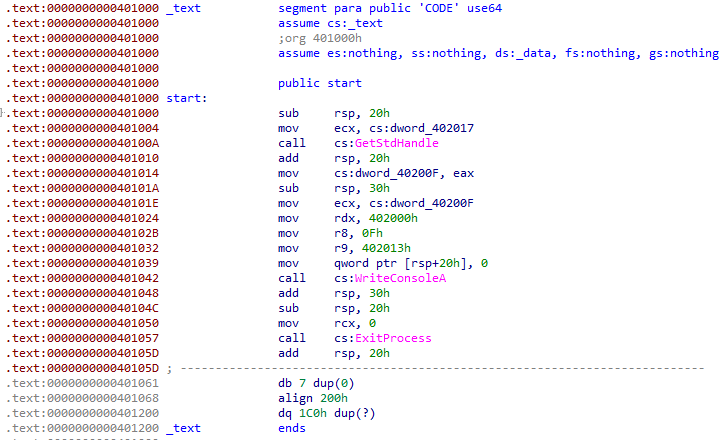

История создания
Assembly, или язык ассемблера, появился в 1940-х годах как средство программирования для первых компьютеров. Его основная цель заключалась в предоставлении разработчикам более удобного способа работы с машинным кодом.

Краткий обзор
Assembly — это низкоуровневый язык программирования, который тесно связан с машинным кодом. Он используется для создания высокоэффективных программ или в случаях, когда требуется прямой доступ к оборудованию.

- Высокая производительность
- Прямой доступ к оборудованию
- Тесная связь с машинным кодом
Вот ключевые особенности Assembly:
| Язык | Уровень | Применение |
|---|---|---|
| Assembly | Низкий | Драйверы, системы |
| C | Средний | Общие приложения |
| Python | Высокий | Наука о данных, веб |
Примеры кода
Пример простейшей программы на языке Assembly, выводящей "Hello, World!" на экран:
section .data
msg db 'Hello, World!' , 0
section .text
global _start
_start:
mov rax, 1
mov rdi, 1
mov rsi, msg
mov rdx, 13
syscall
mov rax, 60
xor rdi, rdi
syscall
